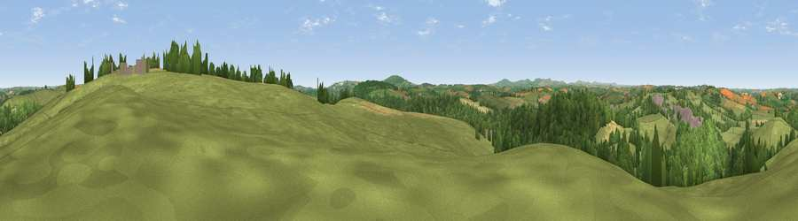

Viewpoint near Bradstone
#21391 in England · top 39% of its area beats it · near BradstoneThe view, rendered

A 360° render of this exact spot computed from the terrain model, tree cover and land cover — summer colours, afternoon light, calibrated against photographs of famous viewpoints. Real trees, hedges and buildings will differ in detail.
The panorama
Grey silhouette: terrain skyline in each direction (720 bearings, Earth curvature and refraction included). Dashed green: skyline with trees (+15 m) and buildings (+8 m) as obstacles. Blue strip: how far the ground is visible on each bearing.
Where the view opens
Wedge length = distance to the farthest visible ground on that bearing (vegetation-aware). Rings at 10, 25 and 50 km.
What fills the view
54% grassland · 37% woodland · 6% cropland · 2% built-up
Angular shares of the visible panorama (visual magnitude), not map area. Landscape diversity 0.42 (0–1 Shannon).
Key numbers
More beautiful places nearby
The staircase of upgrades: each row has a higher view potential than everything closer. Driving times are estimates from straight-line distance, calibrated against real road routing — check an actual route before setting out.
| Place | Direction | Drive | Score |
|---|---|---|---|
| Viewpoint near Bradstone | ENE · 2 km | ~5 min | 64.1 |
| Viewpoint near Chillaton | ENE · 5 km | ~11 min | 65.2 |
| Viewpoint near Kelly Bray | S · 8 km | ~16 min | 73.8 |
| Kit Hill | S · 8 km | ~17 min | 80.3 |
| Viewpoint near Dousland | ESE · 21 km | ~35 min | 81.0 |
| Viewpoint near Lee Moor | SE · 25 km | ~41 min | 82.7 |
| Viewpoint near Downderry | S · 26 km | ~42 min | 83.5 |
| Viewpoint near Lesnewth | WNW · 28 km | ~44 min | 87.7 |
50.59495, -4.30118 · source: screening · position refined by local search. Computed location — check access rights before visiting.